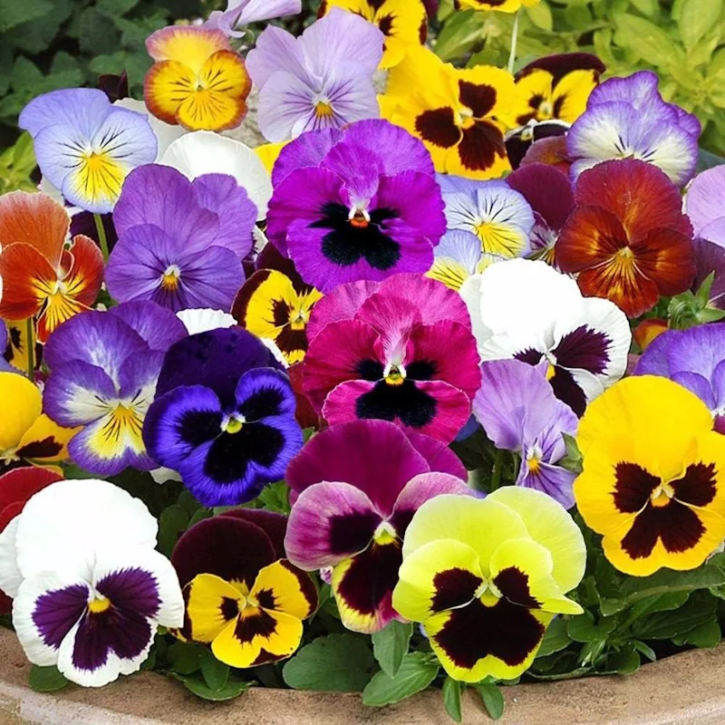

O amor-perfeito é uma planta ornamental conhecida por suas flores delicadas e muito coloridas. Suas flores podem apresentar diferentes combinações de cores, como roxo, amarelo, branco, azul e vermelho.
É uma planta de pequeno porte, bastante utilizada em jardins, canteiros e vasos. Suas flores chamam a atenção pelo formato característico e pela variedade de cores.
O amor-perfeito seria uma ótima escolha para um jardim botânico pequeno, pois ocupa pouco espaço e possui grande valor ornamental. Suas flores podem deixar os canteiros mais coloridos e atrativos para os visitantes.
Por poder ser cultivado em vasos e pequenos espaços, ele também é uma alternativa interessante para áreas onde não existe muito espaço disponível para o cultivo de plantas maiores.
Suas flores também podem atrair alguns polinizadores, como abelhas e outros insetos, contribuindo para a biodiversidade do jardim.
Nome popular: Amor-perfeito
Nome científico: Viola × wittrockiana
Família: Violaceae
Tipo: Planta herbácea ornamental
Altura: Aproximadamente 15 a 30 cm
Luminosidade: Sol pleno ou meia-sombra
Solo: Fértil, úmido e bem drenado
Floração: Principalmente em períodos de temperaturas mais amenas
O amor-perfeito pode contribuir para a biodiversidade do jardim ao oferecer flores que podem servir como recurso para alguns polinizadores.
Em um jardim botânico, também pode ser utilizado em atividades de educação ambiental, permitindo que os visitantes conheçam diferentes formas, cores e características das plantas.
O nome amor-perfeito está relacionado à aparência característica de suas flores. Algumas delas possuem manchas e combinações de cores que podem lembrar um pequeno rosto.
Existem diversas variedades de amor-perfeito, apresentando diferentes tamanhos, cores e padrões nas flores, o que faz com que a planta seja bastante utilizada na composição paisagística.